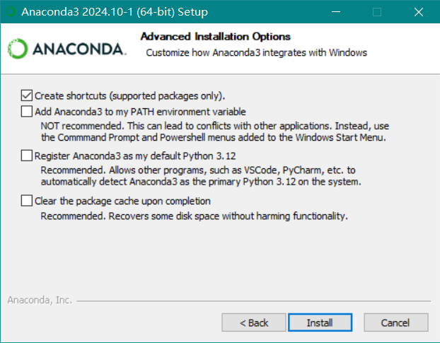
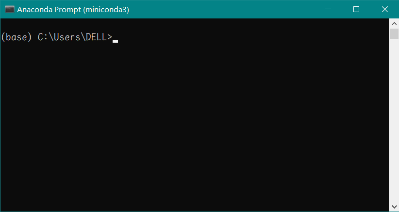

Anaconda 安装以及使用教程
有的概念在正文中不方便叙述，我都放在了 脚注 中, 请点击形如 “[1]” 的链接查看。点击每一个小标题都可以回到目录。
什么是 anaconda
Anaconda = “ana” + “conda”. “ana” 是 “上” 的意思；“conda” 是一个“环境管理软件”，可以负责管理软件包和 虚拟环境. 所以 “anaconda” 就是建立在 “conda” 之上的 “Python 包管理工具”。你可以在 anaconda 中建立不同的 虚拟环境 ，每个虚拟环境里面都可以有不同版本的 Python 和包。
下载 & 安装 Anaconda
下载链接（点击即可下载）： https://repo.anaconda.com/archive/Anaconda3-2024.10-1-Windows-x86_64.exe
下载完成后，双击运行安装程序，一路点击下一步。我拣几个需要注意的地方讲：
这里我选择的安装路径是 D:\anaconda3 （ 记住你的安装路径，后面会用到 ）。
好的，我们继续点击下一步。当出现下图所示界面（即出现“安装”按钮”时，注意要 确保勾选 “Register Anaconda3 as the system python” —— 这样会让系统将 Anaconda3 里面包含的 Python 环境作为系统默认的 Python 环境（不然系统可能找不到 Python 环境）。
Anaconda 基础概念和使用方法
安装完成之后应该可以在开始菜单找到一堆东西了，主要包括：
Anaconda Prompt: 是命令行界面，可以在里面管理 Python 包 (可以被 import 进来的东西) 和 [虚拟环境] 。
Anaconda Navigator: 可以从里面进入 Jupyter Notebook. Jupyter Notebook 十分适合数据分析用，里面可以进行 “文学式编程” —— 可以在一个 notebook 中同时写代码和文字；每个代码块都可以单独运行查看中间结果，可以很好滴避免写出错误的代码。
好了，如果只是想要使用 Anaconda 以及其配套的 Jupyter Notebook，看到这里就可以不用往下看了。
下面的是一些进阶一丢丢的概念，有助于建立起对这些工具的认识。
进阶 step1 - 虚拟环境
以为只能安装一个版本的 Python？NONONO，感谢 Conda，我们可以创建多个 虚拟环境 , 每个虚拟环境都有自己独特的 Python 版本和包。
为什么需要虚拟环境呢？因为在计算机领域，不同的工具所依赖的包很可能不兼容 @_@ 那难道我们就只能卸载原有的 Python 然后安个新的？Too tedious!! 所以有了 conda 这个工具，它帮我们建立 “虚拟环境”，每个虚拟环境各自独立。这样我们就可以在一个电脑上面享用不同的 Python 了！
虚拟环境简介
进入 Anaconda Prompt 黑窗口，你应该会看到这样的界面：
最左边括号内是当前“虚拟环境”名，紧跟其后的是我们当前所在的目录。目前我们是在 Conda 的 base 环境中。
注意 ：万万不要在 base 环境下面安装任何包，原因：
base环境是 conda 用以管理其他环境的基础环境，如果安装了新的包，可能会破坏此环境，导致其他所有的虚拟环境坏掉。对大多数用户而言，
base环境提供的包足够用了。常见的已经提供的包有：
numpy: 用于数值计算;
pandas: 读取 Excel 表格、进行数据处理等；
matplotlib: 用于绘图；
scipy: 用于科学计算；
scikit-learn: 用于机器学习；
requests: 用于网络请求；
查看有哪些虚拟环境
在 Anaconda Prompt 中输入 conda env list ，可以看到当前系统中所有的虚拟环境。如果你没有创建过虚拟环境，应该仅会看到 base 环境。我的环境如下图：
可以看出我有三个虚拟环境，名字分别为 base, normal 和 torch, 位置分别在 C:\Users\DELL\miniconda3, C:\Users\DELL\miniconda3\envs\normal 和 C:\Users\DELL\miniconda3\envs\torch。
目前我所在的是 base 环境, 你可以看到那一行有一个 * 号。
查看当前虚拟环境中安装了哪些包
在 Anaconda Prompt 中输入 conda list 即可。看看我的 base 里面有哪些包 (非常非常多——因为不光有 Python 包，还有 Python 运行必须要用的包 @_@ 我只截取一部分):
# packages in environment at C:\Users\DELL\miniconda3:
#
# Name Version Build Channel
matplotlib 3.7.2 py311haa95532_0
matplotlib-base 3.7.2 py311hf62ec03_0
matplotlib-inline 0.1.6 py311haa95532_0
numpy 1.26.0 py311hdab7c0b_0
numpy-base 1.26.0 py311hd01c5d8_0
pillow 10.0.1 py311h045eedc_0
pip 23.1.2 py311haa95532_0
python 3.11.4 he1021f5_0
requests 2.32.3 pypi_0 pypi
setuptools 67.8.0 py311haa95532_0
sqlite 3.41.2 h2bbff1b_0
创建/删除虚拟环境
创建虚拟环境
还是在 Anaconda Prompt 中，输入:
conda create --name test -y
就可以创建一个名为 test 的环境了。解释一下命令参数：
- --name
后面接环境的名字。最好英文，不然可能会出奇奇怪怪的 bug. 这里我用的名字叫 “test”.
- -y
“yes” 的意思。conda 在你执行命令前都会问你是否继续，我 加了
-y参数就可以默认回答 “yes”.
现在输入 conda env list 应该就会发现多了一个 test 环境。
删除虚拟环境
删除虚拟环境的命令为:
conda remove --name test --all
- --name
后面接环境的名字, 我要删除 test 环境
- --all
这个参数表示删除这个环境中所有的包。
上面这两个参数都必须要有。
进入/退出 虚拟环境
在 conda 的术语里面，进入一个虚拟环境就是“激活”它。所以要进入刚才创建的环境，我们输入:
conda activate test
就可以进入了。进入虚拟环境后我们就可以在这个环境中安装包了。
退出虚拟环境的命令为:
conda deactivate
安装/卸载 Python 包 - 使用 conda
刚才建立的 虚拟环境是一个空环境，啥也没有哦。不信你 conda list 看一看 ^_^ 所以我们先安
安装包
安装包的命令格式为:
conda install <package_name> [options]
# 带尖括号的表示这个得被替换掉。
# 方括号括起来的是“可选的”。这里 options 就是前面创建虚拟环境时
# 用的一些参数，如 --name, -y 等。
# 这两个是编程界的一种惯例吧，知道了挺好的。
安装 Python
首先得安装一个 Python 吧，我想安装一个 python 3.9 (我不喜欢太新的，怕出古怪的 bug). Anaconda Prompt 输入下面命令:
conda install python=3.9 -y
就会自动安装了。如果你不指定版本，则默认安装最新版本。
卸载包
卸载包的命令格式为:
conda remove <package_name> [options]
删除刚才那个 python 的命令就是:
conda remote python
安装 Python 包 - 使用 pip
pip 是 “Package Installer for Python”. 它是 Python 官方提供的包管理工具（conda 是一个老牌子的环境管理工具，这俩有点相似）。
conda 会从 anaconda 的软件仓库里面下载包，而 pip 会从 [PyPI] 下载包。有的包可能只有 PyPI 有。
先安装个 pip:
conda install pip -y
pip 安安装 Python 包
很简单啦:
pip install <package_name>
但是！有的包这么安装可能名字不对！所以最好是去 PyPI 上搜一下包名，用 PyPI 提供的命令安装。 PyPI 网址： https://pypi.org/ .
pip 卸载 Python 包
pip uninstall <package_name>
Congratulation!
学会了这些，你已经超越了大多数 Python 用户了！